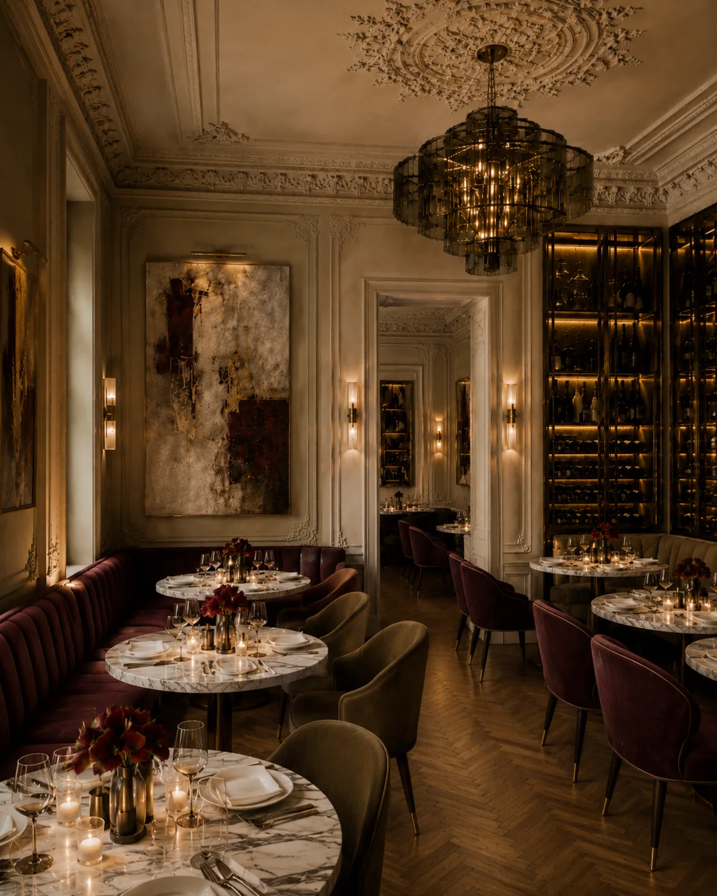
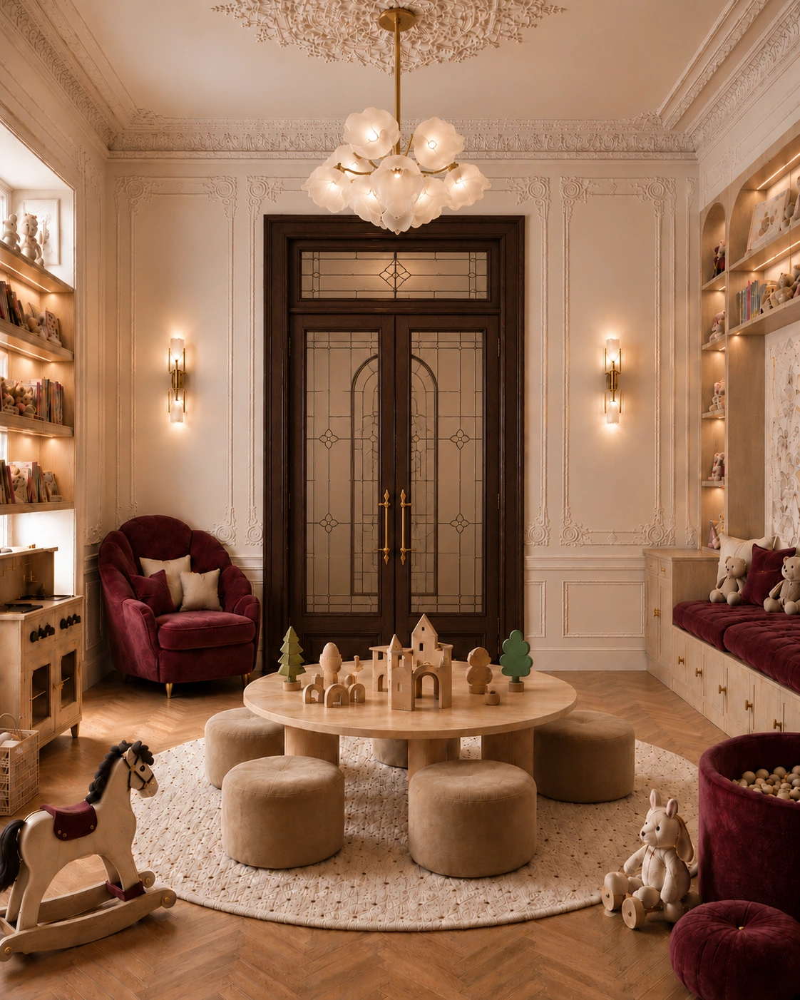
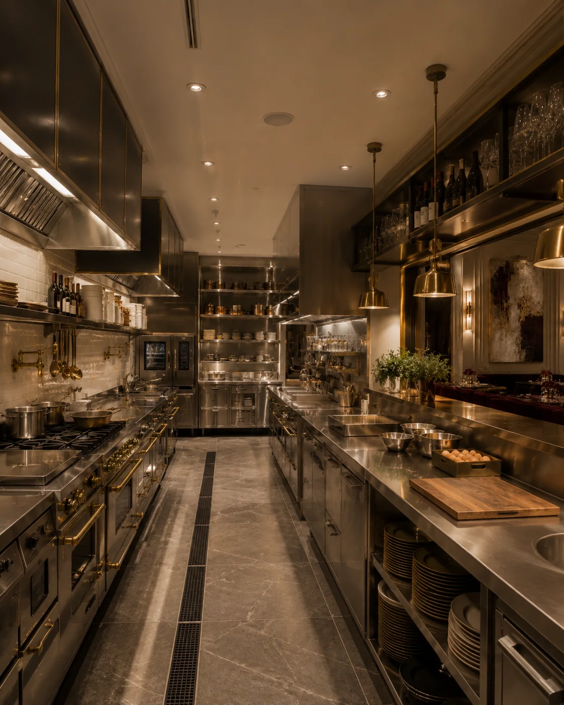
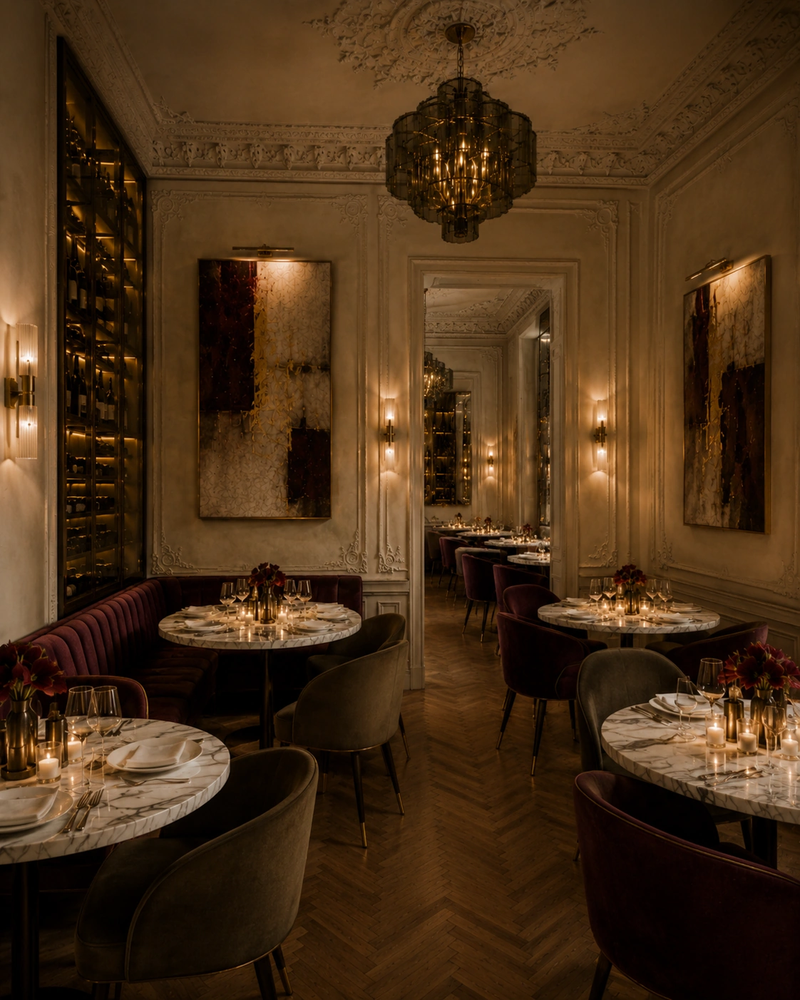
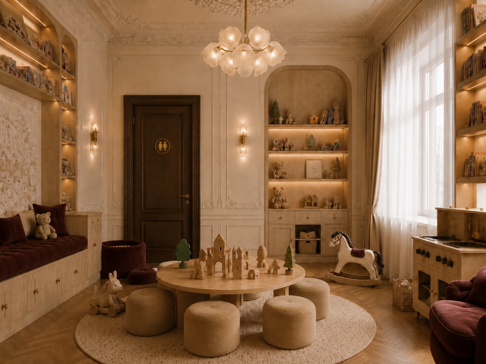
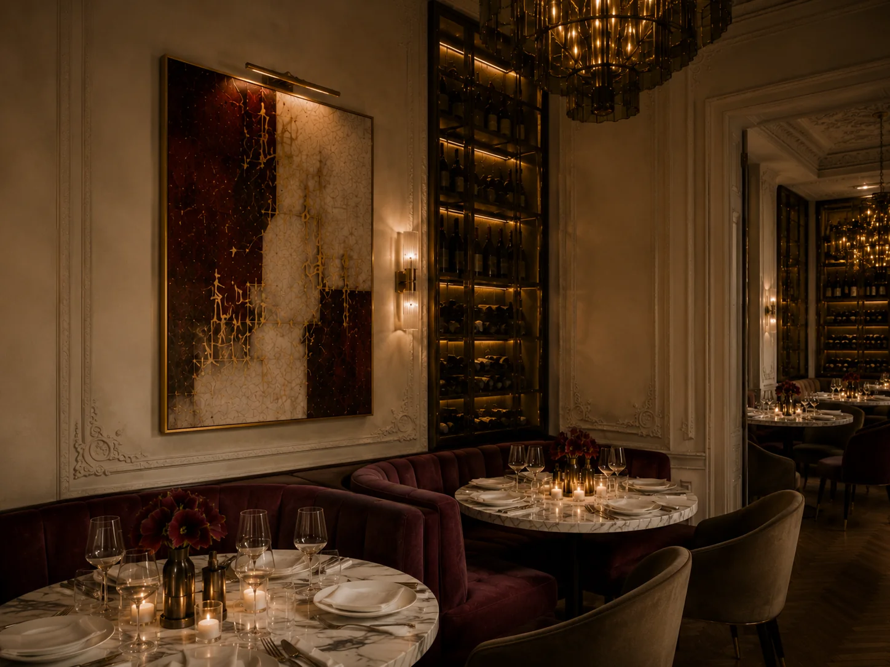

Проект 08
Камерный ресторан
Камерный ресторан с парижской утончённостью и современным искусством. Основной и второй залы, ресепшн, профессиональная кухня и детская объединены общей палитрой: сложные нейтральные оттенки, винные и оливковые акценты, массив дерева, латунь и венецианское стекло.
- Место
- Санкт-Петербург · Петроградская сторона
- Площадь
- 230 м²
- Тип
- Семейный fine-dining ресторан · авторская концепция




